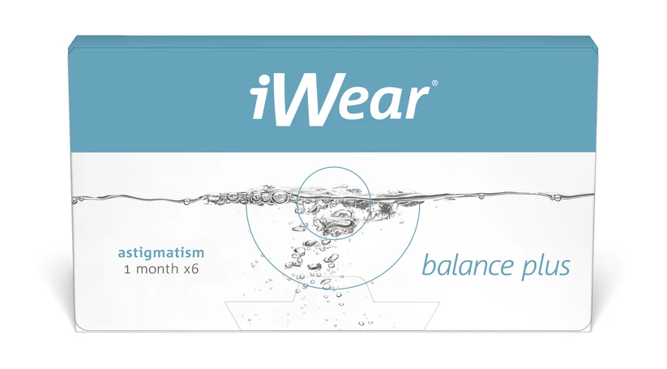

iWEAR

iWEAR
Balance Plus Astigmatismo - Caja de 6 lentes
Características:
USO MENSUAL ASTIGMATISMO-
Diseñado para el astigmatismo
Lentes tóricos diseñados para ayudar a corregir el astigmatismo. -
Comodidad durante el uso
Material flexible que ayuda a mantener la hidratación del lente. -
Asesoría personalizada
Consulta la disponibilidad de tu graduación y recibe orientación sobre tu receta.
PRECIO:
S/280
Hasta 12 cuotas sin interés - Valor cuota: S/ 23.33
Acerca del producto
Detalles de los lentes
∧| Característica | Especificación Técnica |
|---|---|
| Marca | iWear |
| Modelo | Balance Plus Astigmatismo |
| Tipo | Lente de contacto blando tórico |
| Indicado para | Astigmatismo |
| Material | Fanfilcon A |
| Contenido de agua | 55 % |
| Reemplazo | Mensual |
| Cantidad | 6 lentes por caja |
| Producto original con certificación de calidad G&A | |
Acerca de iWEAR BALANCE PLUS
∧
iWear Balance Plus es una línea de lentes de contacto reutilizables diseñada para acompañar diferentes actividades de la vida diaria. Su material Fanfilcon A contiene un 55 % de agua y está pensado para ofrecer comodidad e hidratación durante el uso.
La versión para astigmatismo utiliza un diseño tórico para ayudar a corregir esta condición visual. Es un lente de reemplazo mensual que se presenta en una caja con 6 unidades.